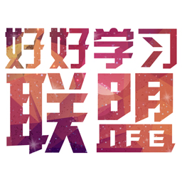
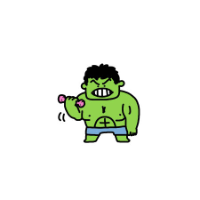
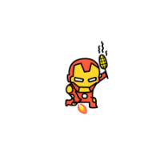
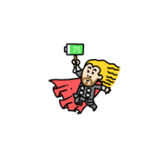
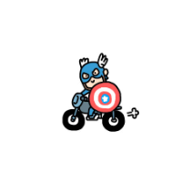

团队名称




关于龙骑士。在与传说中的生命——厄尔多姆龙族试炼多年以后，骑士戴维安发现自己的对手愈发不能令他满意了：过去那个让人闻风丧胆的神龙斯莱瑞克已经变得苍老而脆弱，它的双翼已经残破，它所剩不多的龙鳞也开始腐烂，它的爪子变得肿大老化，它曾经引以为傲的火焰吐息现在威力和进水了的火柴差不多。戴维安觉得这样的屠龙行径已经不能给他带来任何荣誉，转身就要离开，让他的老对手安静的死去。但是他的脑海里传来了一个声音，斯莱瑞克低声的乞求着，让戴维安允许它光荣的战死。戴维安同意了，随即发现他的怜悯给他带来了意外的收获：当他将手中的锋刃刺入斯莱瑞克的胸膛时，龙使出最后的力量用龙爪刺穿了他的喉咙，随着他们血液的融合，斯莱瑞克将它所有的力量随着血液赐予了戴维安，也赐予了他龙族千万年来的智慧。龙的死去将他们的命运完全的绑定在了一起，龙骑士横空出世。古老的力量在龙骑士戴维安的身体里沉睡着，当他需要力量时则完全复苏。而龙族之力，也唤醒了骑士的所有力量...